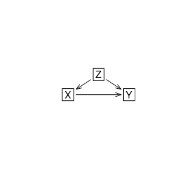
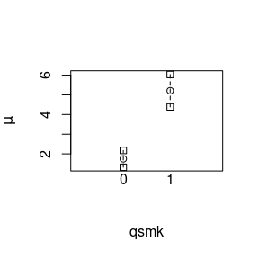
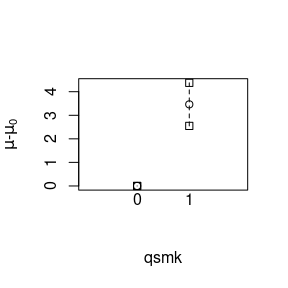

Estimation of causal effects using stdReg2
overview.Rmd
library(stdReg2)Introduction and context
Suppose \(X\) denotes an exposure of interest that takes values 0 or 1. This could represent two different medical treatments, environmental exposures, economic policies, or genetic variants. We will most often use biomedical examples because we are biostatisticians.
We consider the setting where it is of interest to quantify the effect of intervening with \(X\) on outcome that we will denote \(Y\). The outcome could represent some numeric value, it could be the presence or absence of a condition, or it could be the time between two events, such as time from cancer diagnosis to death. Let \(Y(X = x)\) denote the potential outcome if all subjects in the population would hypothetically be exposed to \(X = x\).
To quantify the effect of \(X\), we must summarize the distribution of \(Y(X = x)\) with some statistic. If \(Y\) is dichotomous, it is natural to use \(p\{Y(X = x) = 1\}\), called the risk. If \(Y\) is continuous, the mean is a natural summary statistic \(E\{Y(X = x)\}\). If \(Y\) is a continuous time-to-event, the probability of exceeding a particular value \(t\) is a reasonable statistic: \(p\{Y(X = x) > t\}\). In general, denote the summary statistic of choice as \(T\{Y(X = x)\}\). The summary statistic can also be applied to conditional distributions, which we will denote, e.g., \(T\{Y | X = x\}\).
To quantify the effect of \(X\), we must also decide on a contrast to measure the causal effect. The point of the contrast is to compare the chosen summary statistic between the \(X = 1\) and \(X = 1\). Typical choices would be the difference \(T\{Y(X = 1)\} - T\{Y(X = 0)\}\) or the ratio \(T\{Y(X = 1)\} / T\{Y(X = 0)\}\). It may also be of interest to quantify and report the summary statistics within each group \((T\{Y(X = 1)\}, T\{Y(X = 0)\})\).
In observational studies, the relationship between \(X\) and \(Y\) is likely confounded by a set of other variables \(\boldsymbol{Z}\). This means that the values of the outcome \(Y\) are determined by at least a subset of \(\boldsymbol{Z}\) and the values of the exposure \(X\) are determined by a subset of \(\boldsymbol{Z}\). Naively estimating the contrast would lead to biased estimates of the causal effect.
Regression standardization
See Sjölander (2016) and Sjölander (2018) for more details. Suppose that the covariates \(\boldsymbol{Z}\) are sufficient for confounding control. For more information on what constitutes a sufficient adjustment set, see Witte and Didelez (2019). For a given summary statistic \(T\), then \[ T\{Y(X = x)\} = E_{\boldsymbol{Z}}[T\{Y | X = x, \boldsymbol{Z}\}], \] where the expectation is taken with respect to the population distribution of \(\boldsymbol{Z}\). This is also known as the g-formula or adjustment formula.
In order to estimate this quantity based on an independent and identically distributed sample \((X_1, Y_1, \boldsymbol{Z}_1), \ldots, (X_n, Y_n, \boldsymbol{Z}_n)\), we proceed by
- Specifying and estimating a regression model for \(Y\) given \(X\) and \(\boldsymbol{Z}\).
- Use the fitted model to obtain estimates of \(T\{Y_i | X_i = x, \boldsymbol{Z}_i\}\) for \(i = 1, \ldots, n\). This is done by creating a copy of the observed dataset, replacing the observed \(X_i\) with \(x\) for each individual, and using the fitted model to get predicted values for the copy of the observed data. Denote these predicted values as \(\hat{T}\{Y_i | X_i = x, \boldsymbol{Z}_i\}\).
- Average over the empirical distribution of \(\boldsymbol{Z}\) to obtain the estimate \[ \hat{T}\{Y(X = x)\} = \frac{1}{n}\sum_{i = 1}^n \hat{T}\{Y_i | X_i = x, \boldsymbol{Z}_i\}. \]
One can do this for each level of \(X = 0, 1\) and compute the desired contrast. Under the assumptions that 1) \(\boldsymbol{Z}\) is sufficient for confounding control, and 2) the regression model in step 1 is correctly specified, then this estimator is consistent and asymptotically normal.
Improving robustness by modeling the exposure
A doubly-robust estimator is an estimator that is consistent for a given estimand when one or more of the models used in the forming of the estimator is correctly specified for confounding. So far, we only have one model used in our estimator: the outcome model. We will now introduce a model for the exposure, and see how we can combine them. First, some terminology:
Misspecified model - The true generating mechanism is not contained in the possible mechanisms that are possible under the selected model.
Correctly Specified - A model is correctly specified if it is not misspecified.
Correctly specified for confounding - A correctly specified model that contains a sufficient set of confounders.
If we can model \(P(X=1|\boldsymbol{Z})\), and it is correctly specified and contains all confounders, then we can use that to estimate the probability that each individual \(i\) received the treatment that they did \(W_i = \frac{X_i}{P(X_i=1|\boldsymbol{Z}_i)} + \frac{1-X_i}{1-P(X_i=1|\boldsymbol{Z}_i)}\). Let \(\hat{p}_i\) denote the estimated probability that subject \(i\) received treatment \(1\).
A Doubly robust estimator for the ATE is the Augmented inverse probability weighted AIPW estimator: \[ \frac{1}{n}\sum_{i = 1}^n\frac{Y_i X_i}{\hat{p}_i} - \frac{\hat{T}\{Y_i | X_i = 1, \boldsymbol{Z}_i\}(X_i - \hat{p}_i)}{\hat{p}_i} - \frac{Y_i (1 - X_i)}{1 - \hat{p}_i} - \frac{\hat{T}\{Y_i | X_i = 0, \boldsymbol{Z}_i\}(X_i - \hat{p}_i)}{1 - \hat{p}_i}. \] Any consistent estimation method can be used for the outcome and exposure models. As long as either the outcome model or the propensity score model is correctly specified for confounding, then this doubly robust estimator is consistent for the ATE.
Recently, there seems to be a general misconception that combining an adjusted outcome model and a propensity score model always gives a doubly robust estimator. This is not true – it matters how you combine them!
In practice
Here we will use regression standardization to estimate the average
causal effect of the exposure (quitting smoking) in the variable
qsmk on the weight gain outcome in the variable
wt82\_71 in the dhefs_dat dataset that comes
with the stdReg2 package. The data was collected as part of
a project by the National Center for Health Statistics and the National
Institute on Aging in collaboration with other agencies of the United
States Public Health Service. It was designed to investigate the
relationships between clinical, nutritional, and behavioral factors and
subsequent morbidity, mortality, and hospital utilization and changes in
risk factors, functional limitation, and institutionalization. The
dataset includes 1629 individuals and contains among others the
following variables:
- seqn: person id}
- wt82_71: weight gain in kilograms between 1971 and 1982
- qsmk: quit smoking between between 1st questionnaire and 1982, 1 = yes, 0 = no
- sex: 0 = male, 1 = female
- race: 0 = white, 1 = black or other
- age: age in years at baseline
- education: level of education in 1971, 1 = 8th grade or less, 2 = high school dropout, 3 = high school, 4 - dropout, 5 = college or more
- smokeintensity: number of cigarettes smoked per day in 1971
- smokeyrs: number of years smoked
- exercise: level of physical activity in 1971, 0 = much exercise, 1 = moderate exercise, 2 = little or no exercise
- active: level of activity in 1971, 0 = very active, 1 = moderately active, 2 = inactive, 3 = missing
- wt71: weight in kilograms in 1971
- ht: height in centimeters in 1971
summary(nhefs_dat)
#> seqn qsmk death yrdth
#> Min. : 233 Min. :0.0000 Min. :0.0000 Min. :83.00
#> 1st Qu.:10625 1st Qu.:0.0000 1st Qu.:0.0000 1st Qu.:85.00
#> Median :20702 Median :0.0000 Median :0.0000 Median :88.00
#> Mean :16639 Mean :0.2573 Mean :0.1858 Mean :87.64
#> 3rd Qu.:22771 3rd Qu.:1.0000 3rd Qu.:0.0000 3rd Qu.:90.00
#> Max. :25061 Max. :1.0000 Max. :1.0000 Max. :92.00
#> NA's :1275
#> modth dadth sbp dbp
#> Min. : 1.000 Min. : 1.0 Min. : 87.0 Min. : 47.00
#> 1st Qu.: 3.000 1st Qu.: 8.0 1st Qu.:115.0 1st Qu.: 70.00
#> Median : 6.000 Median :16.0 Median :126.0 Median : 77.00
#> Mean : 6.383 Mean :16.1 Mean :128.6 Mean : 77.74
#> 3rd Qu.:10.000 3rd Qu.:24.5 3rd Qu.:139.0 3rd Qu.: 85.00
#> Max. :12.000 Max. :31.0 Max. :229.0 Max. :130.00
#> NA's :1271 NA's :1271 NA's :29 NA's :33
#> sex age race income
#> Min. :0.0000 Min. :25.00 Min. :0.0000 Min. :11.00
#> 1st Qu.:0.0000 1st Qu.:33.00 1st Qu.:0.0000 1st Qu.:17.00
#> Median :1.0000 Median :43.00 Median :0.0000 Median :19.00
#> Mean :0.5134 Mean :43.66 Mean :0.1315 Mean :17.99
#> 3rd Qu.:1.0000 3rd Qu.:53.00 3rd Qu.:0.0000 3rd Qu.:20.00
#> Max. :1.0000 Max. :74.00 Max. :1.0000 Max. :22.00
#> NA's :59
#> marital school education ht
#> Min. :2.000 Min. : 0.00 Min. :1.000 Min. :142.9
#> 1st Qu.:2.000 1st Qu.:10.00 1st Qu.:2.000 1st Qu.:161.8
#> Median :2.000 Median :12.00 Median :3.000 Median :168.2
#> Mean :2.496 Mean :11.17 Mean :2.715 Mean :168.7
#> 3rd Qu.:2.000 3rd Qu.:12.00 3rd Qu.:3.000 3rd Qu.:175.3
#> Max. :8.000 Max. :17.00 Max. :5.000 Max. :198.1
#>
#> wt71 wt82 wt82_71 birthplace
#> Min. : 39.58 Min. : 35.38 Min. :-41.280 Min. : 1.00
#> 1st Qu.: 59.53 1st Qu.: 61.69 1st Qu.: -1.478 1st Qu.:22.00
#> Median : 69.23 Median : 72.12 Median : 2.604 Median :34.00
#> Mean : 70.83 Mean : 73.47 Mean : 2.638 Mean :31.67
#> 3rd Qu.: 79.80 3rd Qu.: 83.46 3rd Qu.: 6.690 3rd Qu.:42.00
#> Max. :151.73 Max. :136.53 Max. : 48.538 Max. :56.00
#> NA's :90
#> smokeintensity smkintensity82_71 smokeyrs asthma
#> Min. : 1.00 Min. :-80.000 Min. : 1.00 Min. :0.00000
#> 1st Qu.:10.00 1st Qu.:-10.000 1st Qu.:15.00 1st Qu.:0.00000
#> Median :20.00 Median : -1.000 Median :24.00 Median :0.00000
#> Mean :20.53 Mean : -4.633 Mean :24.59 Mean :0.04853
#> 3rd Qu.:30.00 3rd Qu.: 1.000 3rd Qu.:33.00 3rd Qu.:0.00000
#> Max. :80.00 Max. : 50.000 Max. :64.00 Max. :1.00000
#>
#> bronch tb hf hbp
#> Min. :0.00000 Min. :0.00000 Min. :0.000000 Min. :0.000
#> 1st Qu.:0.00000 1st Qu.:0.00000 1st Qu.:0.000000 1st Qu.:0.000
#> Median :0.00000 Median :0.00000 Median :0.000000 Median :1.000
#> Mean :0.08365 Mean :0.01341 Mean :0.005109 Mean :1.059
#> 3rd Qu.:0.00000 3rd Qu.:0.00000 3rd Qu.:0.000000 3rd Qu.:2.000
#> Max. :1.00000 Max. :1.00000 Max. :1.000000 Max. :2.000
#>
#> pepticulcer colitis hepatitis chroniccough
#> Min. :0.0000 Min. :0.00000 Min. :0.00000 Min. :0.00000
#> 1st Qu.:0.0000 1st Qu.:0.00000 1st Qu.:0.00000 1st Qu.:0.00000
#> Median :0.0000 Median :0.00000 Median :0.00000 Median :0.00000
#> Mean :0.1015 Mean :0.03448 Mean :0.01788 Mean :0.05109
#> 3rd Qu.:0.0000 3rd Qu.:0.00000 3rd Qu.:0.00000 3rd Qu.:0.00000
#> Max. :1.0000 Max. :1.00000 Max. :1.00000 Max. :1.00000
#>
#> hayfever diabetes polio tumor
#> Min. :0.00000 Min. :0.0000 Min. :0.00000 Min. :0.00000
#> 1st Qu.:0.00000 1st Qu.:0.0000 1st Qu.:0.00000 1st Qu.:0.00000
#> Median :0.00000 Median :0.0000 Median :0.00000 Median :0.00000
#> Mean :0.08621 Mean :0.9898 Mean :0.01405 Mean :0.02363
#> 3rd Qu.:0.00000 3rd Qu.:2.0000 3rd Qu.:0.00000 3rd Qu.:0.00000
#> Max. :1.00000 Max. :2.0000 Max. :1.00000 Max. :1.00000
#>
#> nervousbreak alcoholpy alcoholfreq alcoholtype
#> Min. :0.00000 Min. :0.0000 Min. :0.000 Min. :1.000
#> 1st Qu.:0.00000 1st Qu.:1.0000 1st Qu.:1.000 1st Qu.:1.000
#> Median :0.00000 Median :1.0000 Median :2.000 Median :3.000
#> Mean :0.02746 Mean :0.8787 Mean :1.913 Mean :2.466
#> 3rd Qu.:0.00000 3rd Qu.:1.0000 3rd Qu.:3.000 3rd Qu.:4.000
#> Max. :1.00000 Max. :2.0000 Max. :5.000 Max. :4.000
#>
#> alcoholhowmuch pica headache otherpain
#> Min. : 1.000 Min. :0.000 Min. :0.0000 Min. :0.0000
#> 1st Qu.: 2.000 1st Qu.:0.000 1st Qu.:0.0000 1st Qu.:0.0000
#> Median : 2.000 Median :0.000 Median :1.0000 Median :0.0000
#> Mean : 3.293 Mean :0.986 Mean :0.6328 Mean :0.2433
#> 3rd Qu.: 4.000 3rd Qu.:2.000 3rd Qu.:1.0000 3rd Qu.:0.0000
#> Max. :48.000 Max. :2.000 Max. :1.0000 Max. :1.0000
#> NA's :397
#> weakheart allergies nerves lackpep
#> Min. :0.00000 Min. :0.00000 Min. :0.000 Min. :0.00000
#> 1st Qu.:0.00000 1st Qu.:0.00000 1st Qu.:0.000 1st Qu.:0.00000
#> Median :0.00000 Median :0.00000 Median :0.000 Median :0.00000
#> Mean :0.02235 Mean :0.06322 Mean :0.145 Mean :0.05045
#> 3rd Qu.:0.00000 3rd Qu.:0.00000 3rd Qu.:0.000 3rd Qu.:0.00000
#> Max. :1.00000 Max. :1.00000 Max. :1.000 Max. :1.00000
#>
#> hbpmed boweltrouble wtloss infection
#> Min. :0.000 Min. :0.000 Min. :0.00000 Min. :0.000
#> 1st Qu.:0.000 1st Qu.:0.000 1st Qu.:0.00000 1st Qu.:0.000
#> Median :1.000 Median :1.000 Median :0.00000 Median :0.000
#> Mean :1.015 Mean :1.046 Mean :0.02618 Mean :0.145
#> 3rd Qu.:2.000 3rd Qu.:2.000 3rd Qu.:0.00000 3rd Qu.:0.000
#> Max. :2.000 Max. :2.000 Max. :1.00000 Max. :1.000
#>
#> active exercise birthcontrol pregnancies
#> Min. :0.0000 Min. :0.000 Min. :0.000 Min. : 1.000
#> 1st Qu.:0.0000 1st Qu.:1.000 1st Qu.:0.000 1st Qu.: 2.000
#> Median :1.0000 Median :1.000 Median :1.000 Median : 3.000
#> Mean :0.6469 Mean :1.195 Mean :1.081 Mean : 3.694
#> 3rd Qu.:1.0000 3rd Qu.:2.000 3rd Qu.:2.000 3rd Qu.: 5.000
#> Max. :2.0000 Max. :2.000 Max. :2.000 Max. :15.000
#> NA's :866
#> cholesterol hightax82 price71 price82
#> Min. : 78.0 Min. :0.0000 Min. :1.507 Min. :1.452
#> 1st Qu.:189.0 1st Qu.:0.0000 1st Qu.:2.037 1st Qu.:1.740
#> Median :216.0 Median :0.0000 Median :2.168 Median :1.815
#> Mean :219.9 Mean :0.1653 Mean :2.138 Mean :1.806
#> 3rd Qu.:245.0 3rd Qu.:0.0000 3rd Qu.:2.242 3rd Qu.:1.868
#> Max. :416.0 Max. :1.0000 Max. :2.693 Max. :2.103
#> NA's :16 NA's :90 NA's :90 NA's :90
#> tax71 tax82 price71_82 tax71_82
#> Min. :0.5249 Min. :0.2200 Min. :-0.2027 Min. :0.0360
#> 1st Qu.:0.9449 1st Qu.:0.4399 1st Qu.: 0.2010 1st Qu.:0.4610
#> Median :1.0498 Median :0.5060 Median : 0.3360 Median :0.5440
#> Mean :1.0580 Mean :0.5058 Mean : 0.3324 Mean :0.5522
#> 3rd Qu.:1.1548 3rd Qu.:0.5719 3rd Qu.: 0.4438 3rd Qu.:0.6220
#> Max. :1.5225 Max. :0.7479 Max. : 0.6121 Max. :0.8844
#> NA's :90 NA's :90 NA's :90 NA's :90
#> w sw
#> Min. : 1.054 Min. :0.3312
#> 1st Qu.: 1.230 1st Qu.:0.8665
#> Median : 1.373 Median :0.9503
#> Mean : 1.996 Mean :0.9988
#> 3rd Qu.: 1.990 3rd Qu.:1.0793
#> Max. :16.700 Max. :4.2977
#> We will assume that the set of confounders in \(\boldsymbol{Z}\) includes sex, race, age, education, number of cigarettes smoked per year, the number of years smoked, level of physical activity, and baseline weight in 1971. This equivalent to assuming that the counterfactual weight gain is independent of the exposure conditional on these variables. In other words, we are assuming the following directed acyclic graph:

For the specific forms of the conditional expectations required in the outcome we assume a linear regression model with both linear and quadratic forms of the continuous covariates. We can fit this as
m <- glm(wt82_71 ~ qsmk + sex + race + age + I(age^2) +
as.factor(education) + smokeintensity + I(smokeintensity^2) +
smokeyrs + I(smokeyrs^2) + as.factor(exercise) + as.factor(active) +
wt71 + I(wt71^2),
data = nhefs_dat)
summary(m)
#>
#> Call:
#> glm(formula = wt82_71 ~ qsmk + sex + race + age + I(age^2) +
#> as.factor(education) + smokeintensity + I(smokeintensity^2) +
#> smokeyrs + I(smokeyrs^2) + as.factor(exercise) + as.factor(active) +
#> wt71 + I(wt71^2), data = nhefs_dat)
#>
#> Coefficients:
#> Estimate Std. Error t value Pr(>|t|)
#> (Intercept) -1.6586176 4.3137734 -0.384 0.700666
#> qsmk 3.4626218 0.4384543 7.897 5.36e-15 ***
#> sex -1.4650496 0.4683410 -3.128 0.001792 **
#> race 0.5864117 0.5816949 1.008 0.313560
#> age 0.3626624 0.1633431 2.220 0.026546 *
#> I(age^2) -0.0061377 0.0017263 -3.555 0.000389 ***
#> as.factor(education)2 0.8185263 0.6067815 1.349 0.177546
#> as.factor(education)3 0.5715004 0.5561211 1.028 0.304273
#> as.factor(education)4 1.5085173 0.8323778 1.812 0.070134 .
#> as.factor(education)5 -0.1708264 0.7413289 -0.230 0.817786
#> smokeintensity 0.0651533 0.0503115 1.295 0.195514
#> I(smokeintensity^2) -0.0010468 0.0009373 -1.117 0.264261
#> smokeyrs 0.1333931 0.0917319 1.454 0.146104
#> I(smokeyrs^2) -0.0018270 0.0015438 -1.183 0.236818
#> as.factor(exercise)1 0.3206824 0.5349616 0.599 0.548961
#> as.factor(exercise)2 0.3628786 0.5589557 0.649 0.516300
#> as.factor(active)1 -0.9429574 0.4100208 -2.300 0.021593 *
#> as.factor(active)2 -0.2580374 0.6847219 -0.377 0.706337
#> wt71 0.0373642 0.0831658 0.449 0.653297
#> I(wt71^2) -0.0009158 0.0005235 -1.749 0.080426 .
#> ---
#> Signif. codes: 0 '***' 0.001 '**' 0.01 '*' 0.05 '.' 0.1 ' ' 1
#>
#> (Dispersion parameter for gaussian family taken to be 53.59474)
#>
#> Null deviance: 97176 on 1565 degrees of freedom
#> Residual deviance: 82857 on 1546 degrees of freedom
#> AIC: 10701
#>
#> Number of Fisher Scoring iterations: 2To peform regression standardization to estimate the causal effect we use . We must specify the same outcome regression model as a formula, provide the data, describe which values of the exposure we wish to estimate the counterfactual means, specify which contrasts we want, and specify the reference level for the contrasts. The following command estimates that model and we obtain the group-wise estimates, the difference, and the ratio.
m2 <- standardize_glm(wt82_71 ~ qsmk + sex + race + age + I(age^2) +
as.factor(education) + smokeintensity + I(smokeintensity^2) +
smokeyrs + I(smokeyrs^2) + as.factor(exercise) + as.factor(active) +
wt71 + I(wt71^2),
data = nhefs_dat,
values = list(qsmk = c(0,1)),
contrasts = c("difference", "ratio"),
references = "0")
m2
#> Outcome formula: wt82_71 ~ qsmk + sex + race + age + I(age^2) + as.factor(education) +
#> smokeintensity + I(smokeintensity^2) + smokeyrs + I(smokeyrs^2) +
#> as.factor(exercise) + as.factor(active) + wt71 + I(wt71^2)
#> Outcome family: gaussian
#> Outcome link function: identity
#> Exposure: qsmk
#>
#> Tables:
#> qsmk Estimate Std. Error lower 0.95 upper 0.95
#> 1 0 1.75 0.217 1.32 2.17
#> 2 1 5.21 0.420 4.39 6.03
#>
#> Reference level: = 0
#> Contrast: difference
#> Exposure Estimate Std. Error lower 0.95 upper 0.95
#> 1 0 0.00 0.000 0.00 0.00
#> 2 1 3.46 0.466 2.55 4.38
#>
#> Reference level: = 0
#> Contrast: ratio
#> Exposure Estimate Std. Error lower 0.95 upper 0.95
#> 1 0 1.00 0.000 1.00 1.00
#> 2 1 2.98 0.435 2.13 3.83
plot(m2)
plot(m2, contrast = "difference", reference = 0)
The output from the model shows the estimated potential outcome means in each exposure level, the difference and ratio thereof, and the associated standard error estimates, confidence intervals, and p-values. Inference is done using the sandwich method for variance calculation. Under the assumptions that the outcome model is correctly specified and contains all confounders, these are consistent estimates of the causal effects of interest. We can also get plots of the effects by using the plot function.
To obtain doubly robust inference we use the following command. Note that we now specify a model for the exposure, the propensity score model.
m2_dr <- standardize_glm_dr(formula_outcome = wt82_71 ~ qsmk + sex + race + age + I(age^2) +
as.factor(education) + smokeintensity + I(smokeintensity^2) +
smokeyrs + I(smokeyrs^2) + as.factor(exercise) + as.factor(active) +
wt71 + I(wt71^2),
formula_exposure = qsmk ~ sex + race + age + I(age^2) +
as.factor(education) + smokeintensity + I(smokeintensity^2) +
smokeyrs + I(smokeyrs^2) + as.factor(exercise) + as.factor(active) +
wt71 + I(wt71^2),
data = nhefs_dat,
values = list(qsmk = c(0,1)),
reference = 0)
#> Warning in format_result_standardize(res, contrasts, references, transforms, :
#> Reference level or contrast not specified. Defaulting to NULL.
m2_dr
#> Doubly robust estimator with:
#>
#> Exposure formula: qsmk ~ sex + race + age + I(age^2) + as.factor(education) + smokeintensity +
#> I(smokeintensity^2) + smokeyrs + I(smokeyrs^2) + as.factor(exercise) +
#> as.factor(active) + wt71 + I(wt71^2)
#> Exposure link function: logit
#> Outcome formula: wt82_71 ~ qsmk + sex + race + age + I(age^2) + as.factor(education) +
#> smokeintensity + I(smokeintensity^2) + smokeyrs + I(smokeyrs^2) +
#> as.factor(exercise) + as.factor(active) + wt71 + I(wt71^2)
#> Outcome family: gaussian
#> Outcome link function: identity
#> Exposure: qsmk
#>
#> Tables:
#> qsmk Estimate Std. Error lower 0.95 upper 0.95
#> 1 0 1.76 0.218 1.34 2.19
#> 2 1 5.19 0.438 4.33 6.04